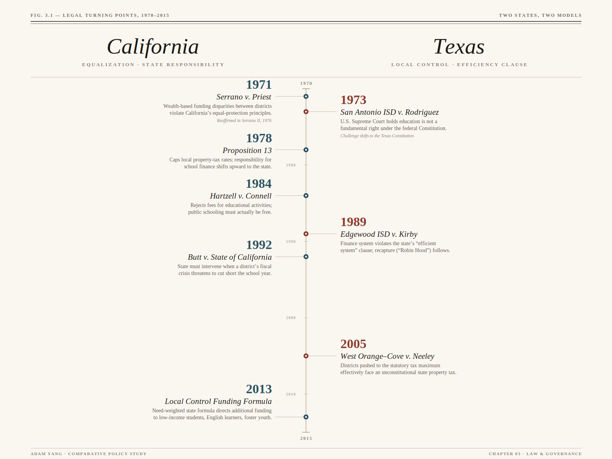

The rules that built the systems.
What legal and institutional structures define each state’s education system — and what problem was each built to solve?
Both California and Texas constitutionally commit themselves to public education, but they have developed very different legal and institutional answers to what that commitment requires. California’s trajectory has pushed the state toward stronger equalization and broader state responsibility, while Texas has repeatedly tried to preserve local control even as courts and legislatures have been forced to confront inequities created by local property wealth.
A — Constitutional language
California Constitution, Article IX begins from the idea that a “general diffusion of knowledge and intelligence” is essential to preserving the people’s rights and liberties, and it requires the legislature to provide a “system of common schools.” California’s language reflects a broad public obligation: schooling is not just permitted, but affirmatively required as part of the state’s civic mission.
Texas Constitution, Article VII, Section 1 also begins with the idea that a “general diffusion of knowledge” is essential to preserving liberty, but it directs the legislature to make suitable provision for an “efficient system of public free schools.” Texas’s clause places special emphasis on efficiency, which later became central in school-finance litigation.
The difference in wording matters. California’s constitutional language has supported arguments about equal access, free schooling, and eventually a broader right to meaningful educational opportunity. Texas’s constitutional language has done the same work through a different concept: not equality alone, but whether the state has created an “efficient” system. In both states, then, the constitution creates an affirmative duty to maintain public education — but the legal vocabulary through which that duty is enforced differs in important ways.
B — Key court cases
California
The central California school-finance case is Serrano v. Priest (1971; reaffirmed in 1976). The problem it responded to was straightforward: because local property wealth differed dramatically across school districts, districts with lower property values could not generate the same revenue as wealthier districts even when they imposed similar tax rates. The California Supreme Court concluded that this kind of wealth-based disparity violated the California Constitution’s equal-protection principles. The major effect of Serrano was to push California away from a purely local-property-tax system and toward greater state equalization.
Two additional California cases help show that the state’s constitutional duty goes beyond simply opening schoolhouse doors. In Hartzell v. Connell (1984), the court rejected fees for educational activities on the ground that public education must actually be free. In Butt v. State of California (1992), the court required the state to intervene when a district’s fiscal crisis threatened to cut short the school year, signaling that the state could not disclaim responsibility for grossly unequal educational opportunity once a crisis became obvious. Taken together, these cases suggest that California law has moved toward a more substantive understanding of educational rights, even if California doctrine is still framed more through equality and free-school principles than through a fully separate adequacy doctrine.
Texas
The key starting point in Texas is San Antonio Independent School District v. Rodriguez (U.S. Supreme Court, 1973). Families challenged Texas’s school-finance system under the federal Equal Protection Clause, arguing that reliance on local property taxes produced unconstitutional inequality. The U.S. Supreme Court rejected that claim, holding that education is not a fundamental right under the federal Constitution and that wealth-based school-finance disparities did not trigger strict scrutiny. That decision did not end the Texas finance debate, but it shifted the battleground from federal court to the Texas Constitution.
That state-level challenge succeeded in Edgewood Independent School District v. Kirby (Texas Supreme Court, 1989). There, the court held that the state’s finance system violated the Texas Constitution’s requirement for an “efficient system of public free schools,” because districts with low property wealth simply could not raise comparable revenue. Edgewood forced the legislature to redesign the finance system and eventually led to stronger equalization mechanisms, including recapture, often called “Robin Hood,” through which property-wealthier districts share revenue with the state system.
Later cases refined rather than erased that tension. In West Orange–Cove Consolidated ISD v. Neeley (2005), the Texas Supreme Court held that Texas had effectively created a state property tax because districts had too little meaningful discretion once they were pushed to tax at or near the statutory maximum. The legislature responded by restructuring tax rates while preserving the broader logic of local taxation plus state equalization. The larger pattern is clear: Texas courts have repeatedly required the legislature to reduce the most extreme inequities, but they have also tried to preserve some space for local fiscal and political discretion.

C — Laws and governance structures
California
Two California policy changes are especially important. Proposition 13 (1978) capped local property-tax rates and sharply constrained local revenue growth. One major consequence was that responsibility for school finance shifted upward toward the state. That helped weaken the direct link between local property wealth and school revenue, but it also reduced local fiscal autonomy and made districts more dependent on state budgeting and statewide formulas.
A later reform, the Local Control Funding Formula (LCFF), sought to solve a different problem: not only inequality between districts, but the need to direct more money toward students facing greater barriers to opportunity. LCFF uses a need-weighted formula that gives additional funding for low-income students, English learners, and foster youth. It also increased local planning requirements through Local Control and Accountability Plans. In this sense, California’s governance model combines stronger state redistribution with a rhetoric of local flexibility. The tradeoff is complexity: authority is spread across the State Board of Education, the Superintendent of Public Instruction, the California Department of Education, county offices of education, local districts, and charter authorizers, which can make accountability harder to follow even when the formal commitment to equity is strong.
Texas
Texas’s core finance law is the Foundation School Program, the main statewide formula through which the state distributes school aid. Its basic purpose is to blend state support with local taxation rather than replacing local taxation. The state therefore does not eliminate local wealth differences; instead, it partially moderates them through formula funding and recapture. That is why school finance in Texas is best understood not as purely local or purely state-funded, but as a system that tries to balance local taxation with constitutional pressure for statewide efficiency.
Texas also operates with a more centralized statewide accountability framework than California. Local districts still have elected school boards and a meaningful local political identity, but the Texas Education Agency, the STAAR testing system, and A–F accountability ratings give the state a stronger role in monitoring district performance and pressuring districts to meet statewide standards. In other words, Texas protects local control most strongly on the finance side, while maintaining comparatively firm state oversight on the accountability side.
D — Net effect
Taken together, these legal and governance choices created two distinct educational architectures. California’s trajectory has increased state responsibility and pushed the system toward greater equalization, especially after Serrano, Proposition 13, and LCFF, but at the cost of a more layered and sometimes confusing governance structure. Texas’s trajectory has preserved a stronger place for local taxation and local identity, even while litigation forced the state to reduce the worst wealth disparities through recapture and formula aid. The tension that remains in both states is the same one that runs through American education more broadly: how to balance local control with the promise of equal educational opportunity.
These legal choices created the funding structures and governance patterns that the data pages that follow will trace more concretely.
References
- California. (1879). California Constitution, Article IX: Education (Secs. 5, 8).
- California State Board of Equalization. (2025, March). California property tax: An overview (Publication 29).
- Gordon, A. D. (2016). California constitutional law: The right to an adequate education. Hastings Law Journal, 67, 323–365.
- Lemke, M. A., Jackson, K., & Lehr, M. D. (2014). An overview of school finance policy: Key federal and Texas litigation. Texas Education Review, 2(2), 147–156.
- Texas. (1876). Texas Constitution, Article VII: Education.